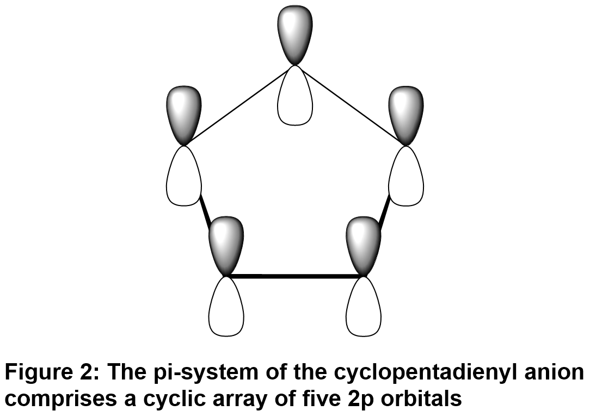

Ferrocene, first prepared in 1951, is an organometallic “sandwich” compound. The molecule contains an iron(II) center, sandwiched between two organic fragments. The metal center is equally bonded to each of the 10 carbons of the planar cyclopentadienyl rings, and the resulting bright orange compound is remarkably stable to water and heat. Ferrocene is quite non-polar (Rf ≈ 1 in TLC experiments using hexanes to elute a sample on a SiO2-coated TLC plate). Its cyclopentadienyl anion is prepared by deprotonation of cyclopentadiene, using potassium hydroxide as the base in diethyl ether solvent. Cyclopentadiene readily dimerizes to dicyclopentadiene and must be freshly prepared by thermal cracking of the dimer. The cracking process involves a retro Diels-Alder reaction.
Critical to an understanding of the ferrocene synthesis is an appreciation for the aromatic character of the cyclopentadienyl anion. The pKa of a cyclopentadiene methylene (-CH2-) hydrogen suggests that the conjugate base, cyclopentadienyl anion, is very stable relative to the anions derived from other hydrocarbons. The pKa of cyclopentadiene is around 16, roughly equal to that of water. Compare this value to that for the much less acidic allylic hydrogen of cyclohexadiene (Figure 1).
The pKa data indicate that it is relatively easy to form the cyclopentadienyl anion. It is much more stable than the corresponding cyclohexadienyl anion. The more stable cyclopentadienyl anion is planar, with all carbons sp2 hybridized and a continuous, cyclic array of five 2p orbitals aligned perpendicular to the molecular plane (Figure 2). Six (4n+2, with n=1) ùúã-electrons are delocalized over this cyclic array, satisfying the Hückel condition for aromaticity. The aromatic character of the cyclopentadienyl anion renders it quite stable relative to other carbanions. It is stable enough that it forms readily upon exposure of cyclopentadiene to potassium hydroxide in diethyl ether. Formation of the anion is evident from its pink color in this solvent.

Cyclopentadienyl anion is stable, for a carbanion-but it is still readily deprotonated upon exposure to moisture. Moreover, FeCl2•H2O is readily oxidized by atmospheric oxygen. Therefore, you will have to conduct the ferrocene synthesis in dry glassware and under an atmosphere of nitrogen. Many reactions in organic chemistry are moisture- or air-sensitive or both. The ability to work under anhydrous conditions and under an inert atmosphere is a vital skill for the practicing organic chemist.
Complexation with iron(II) stabilizes the cyclopentadienyl anion, as the organic fragment shares its six ùúã-electrons with the metal center. The valence electron count at the iron(II) center in ferrocene becomes 12 from the two cyclopentadienyl ligands, plus 6 from the metal itself, for a total of 18 electrons. This is a particularly stable electronic configuration for the metal, representing frilled 4s, 3d, and 4p shells (Krypton-like). The “18-electron rule” for transition metals is analogous to the more familiar octet rule for the main group elements.
The cyclopentadienyl rings in ferrocene retain their aromatic character. You will explore their reactivity in an electrophilic aromatic substitution reaction as you prepare acetylferrocene (Figure 3). The acetylated material is more polar and darker-colored than the starting ferrocene. Column chromatography is well suited for separating the acetylferrocene product from an unreacted ferrocene. You will be able to monitor elution of the colored ferrocene and acetylferrocene bands from the chromatography column visually. You will characterize both ferrocene and acetylferrocene by MP determination and NMR spectroscopy (1H and 13C).
Videos (There are some discrepancies between the video and the procedure listed below. Please follow the written procedure)
Synthesis of Ferrocene: https://www.youtube.com/watch?v=PGBXbuarMNs
Some Notes:
Synthesis of Acetylferrocene: https://www.youtube.com/watch?v=QleFjHqs1CM&t=1278s
Some Notes: